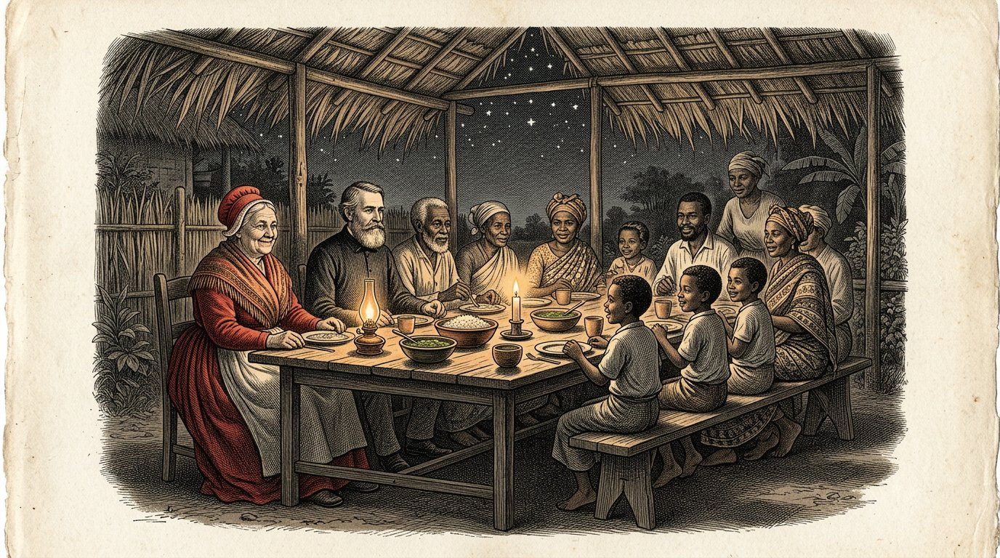
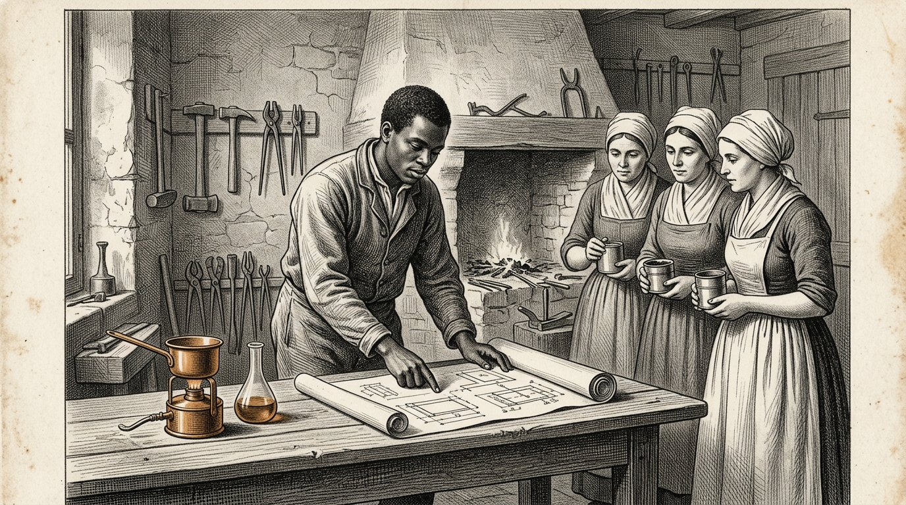

BOOK FIVE
THE KOSARIS
The Book of the Partner

BOOK FIVE
The Book of the Partner
The Letter That Went Ahead
Prologue — spoken by Kosus
I am Kosus. When you open this fifth book, thirteen years will have passed since my death, and Petros will by now have held the manuscript Alkion gave him so often that the leather binding around it has grown soft. This is no longer my book. This is Petros' book. I speak the prologue only because custom requires it, and because there is one thing I wish to say before you begin.
Book Four was about a fluid. Book Five is about the relationship between two people who wish to make that fluid together in a place where it has not yet been made. That is a different question. Whoever makes a fluid needs technique. Whoever builds a relationship needs the scales of Timaris. The first can be learned. The second can be ruined.
Petros left the harbor village with a chest, a bottle, and the manuscript. Before he departed, he wrote a letter. The letter went ahead on the ship that sailed three weeks before he did. It bore the name Yara, and the address of a village on the equator, where Alkion and Demira had been years before. The letter said: I am Petros, pupil of Kosus, successor to Alkion. I have not come to take. I have come to ask whether I may learn from you and to show what I have learned.
The letter arrived three weeks before Petros. Yara read it. She read it twice. Then she placed it in a drawer and said nothing to anyone. What lies in the drawer will surface in this book when the hour comes.
Whoever reads this book will not learn how to export a fluid. Whoever reads this book will learn how to build a system together without either party thinking, at the end, that they have lost. That is a smaller thing to learn than it seems. And it is a greater thing to do than everyone says.
I give the word to Petros. From here on, it is his.
Kosus says:a letter that goes ahead of the traveler is the first fiber of the scales hung between two people. Whoever arrives without a letter must hurry. Whoever lets the letter arrive ahead of them arrives in their own time.
By Jacobus van Merksteijn
This is Book Five of the Kosaris. It follows Book Four, in which liquid came from the grass and the village kept itself warm through a winter without gas. At the end of Book Four, Alkion passed Kosus’s manuscript on to Petros, and Anthea closed the book with the promise that Petros’s first pupil would in turn write Book Six.
Petros therefore sets sail in this book. He travels to the equator, where he had already spent four years roaming as a young man. He arrives in a village where Yara lives, whom you know from Book One Part X as the woman in the red dress. She is not the same as she was then — she has grown older, and the cooperative she and her elders established has grown into something three neighbouring countries are watching closely.
I wrote this book after three meetings with Petros over the past few years and after reading the letters he wrote to Alkion and Anthea. The letters themselves have remained in Anthea’s possession. What you are reading is my summary of what he told me and what the letters helped me understand.
I will name one thing plainly. Book Five is not about development aid, nor about energy exports. It is about what it means to arrive in the south as a northerner without bringing along the assumptions of the previous century. That is more difficult than it seems. Petros knows this, and the book shows what happens when he nevertheless tries. He fails in some respects. Yara helps him back on track. In other respects, he teaches her something she did not yet know. That is the balance by which this book is weighed.
Whoever reads this book and thinks it is about Africa is not reading carefully. It is about how two people from two continents learn to build something together that neither of them could have built alone. That is precisely what the four pillars mean when they are written down.
Malta, August 2027.
Part 1

In which Petros arrives at the equator, Yara receives him without extending her hand, and the first week is devoted to listening rather than speaking.

Petros stepped from the boat onto a pier where, at seven in the morning, the sun already stood higher than it would have stood at midnight in Malta, had it stood there at all. His crate stood beside him. His leather bag hung from his shoulder. The bottle of hydrolysate lay wrapped in his shirts at the bottom of the bag.
There was a boy on the pier who knew his name. The boy said: you are Petros. I am Baraka. Yara sent me. Come.
Petros said: I have neither horse nor cart. Baraka said: that is well. There is a car. Petros said: you have a car? Baraka said: the village has a car. Today I may drive it because I am fetching you.
They walked down the pier to an old Toyota, yellow, its doorless side secured with rope. Baraka loaded the crate into the boot. He said: is it heavy? Petros said: it contains a press and a book. The press is not large, but it is heavy. Baraka said: then it is heavy.
They drove inland for an hour. The road was red and uneven, and Petros felt the crate slide behind him at every bump. Baraka drove slowly and without haste. He said: are you hungry? Petros said: not yet. Baraka said: then that is fortunate, for we do not eat until we arrive.
They passed mango trees, a herd of goats, and three women with bundles balanced on their heads. Baraka greeted them without stopping. Petros said: everyone greets everyone here. Baraka said: that is not everyone. Those are Fatou and Aminata and Mariam. They pass this way every morning. If someone came by whom I did not know, I would not greet him. That is different.
Petros said: I think I have much to learn about who is who here. Baraka said: it is not difficult. You must listen for the names. When someone has a name, you know the others know him. When someone passes without a name, you know he is not from here. That is all.
They arrived at a village of a long row of low houses and a great mango tree in the middle of an open space. Beneath the mango tree sat a woman in a red dress on a chair. She was older than Petros had imagined Yara. She rose when she saw the car. She walked towards it. She did not extend her hand.
She said: welcome, Petros, student of Kosus. Sit down first. We will speak tonight. Today you listen. Petros nodded. He said: thank you, Yara. He sat on the bench beneath the mango tree. Baraka brought him water. And Petros listened all afternoon to the sounds of the village without saying a word.
Kosus says:whoever arrives in a strange country and speaks on the first day speaks of himself. Whoever listens on the first day speaks of others on the second. Only the one who speaks of others is understood on the third.

Yara returned at the end of the afternoon. She said: come with me. We are eating. She brought Petros to a long wooden table set beneath a roof of dried leaves. Twelve people were already seated at the table: Baraka, three older men, four women of Yara's age, and four children between seven and thirteen.
Yara said: this is Petros. He comes from very far away. He knows Alkion and Demira. He was here ten years ago, but you probably no longer remember him, because he spent four years travelling through all the coastal villages without staying anywhere for longer than a month.
The oldest of the men at the table said: you did not remain in one place long enough to become known anywhere. That happens more often with northerners. Petros said: I know that, and this time I want to do things differently. I want to stay here as long as necessary, and no less.
Yara said: how long is necessary? Petros said: I do not know. I will learn that from you. Yara said: that is a good answer. Remember that you gave it. When you grow impatient in three months, I will remind you.
They ate. The food was rice with chicken and a green sauce Petros did not know. He asked what it was. One of the women said: that is Moringa. Petros said: I know it. We press it together with the grass. The woman said: you press it? Petros said: its leaves, together with the Juncao. That makes the liquid clear.
The woman said: we eat it. We dry it and grind it and put it in the sauce. We do not press it. Petros said: that may be better. I had never thought that Moringa could also be eaten. I have always regarded it as an auxiliary substance.
Yara said: that is the first thing you will learn from us. What you call an auxiliary substance is a crop to us. What you call a crop is medicine to us. When you press Moringa, you waste something. When you eat it, you grow stronger. If we are to work together, we must first agree on what we eat and what we press. Otherwise you will ruin our kitchen and insult us without knowing it.
Petros nodded. He said: I will write that down. Yara said: write it down later. Eat now. They ate. The stars appeared above the roof of leaves. Petros felt that he was farther from home than he had ever been, and at the same time he felt that he was exactly where he belonged.
Kosus says:whoever recognises, in a strange country, an auxiliary substance that is a crop there must understand that he has not arrived at a supplier. He has arrived at a kitchen. Do not insult the kitchen, or you will never eat with them again.

On the second evening, Yara brought Petros to her house. It was a long, low house with a veranda. On the veranda stood a writing desk. On the writing desk lay a drawer. In the drawer lay papers.
Yara opened the drawer. She took out a letter. She said: you wrote this three weeks before your arrival. I read it twice. I placed it in this drawer. I told no one that I had received it.
Petros said: why not? Yara said: because I wanted to see whether you would arrive as the letter promised. In the letter, you wrote that you were not coming to take. You wrote that you were coming to ask. For three weeks I watched to see how you would arrive. Today I saw you arrive. You did not come to take. You came to ask. Now the letter may leave the drawer.
Petros said: and if I had arrived differently? Yara said: then the letter would have had to remain in the drawer. And tomorrow I would have told you that you were welcome in a village farther on, where my brother-in-law lives. He is courteous and hospitable, and he would have hosted you for three weeks without your learning anything from us. Then you would have gone back with stories, not knowledge.
Petros said: how did you know I would be different? Yara said: I did not know. I hoped. Your letter was written differently from the letters I receive from other northerners. They always begin with what they have come to bring. You began with what you had come to ask. That was a good sign. But signs can lie. That is why the letter waited three weeks.
Petros asked: what did you write back to me? Yara said: nothing. I do not answer letters from people I do not know. I answer people who arrive. That is different. Paper lies easily. People lie too, but with them I can see when.
Petros nodded. He said: then the letter in the drawer is a beginning now. Yara said: no, it is an ending. What we do from tomorrow onward need not be written down. We speak. We build. And when you return home, you will write to Alkion what has been built, not what has been said. That is the way.
Petros unfolded the letter. He saw his own handwriting from three months before. He felt something strange: the letter was no longer his. It belonged to Yara. For three weeks she had carried those words without his knowing. Now she gave them back, not as an answer but as a key.
Kosus says:a letter you send ahead is no longer yours once it arrives. It is carried by the one who reads it and returned at the hour the reader chooses. Whoever writes should know this. Whoever writes without knowing it writes only to himself.
Part II
Part 2

In which Petros discovers that the grass has been cultivated here for fifteen years, that the elders know more about it than he does, and that the press he has brought with him raises the question of what it leaves behind by being absent.

On the third morning, Yara took Petros to the field behind the village. It was head-high Juncao, stretching as far as the eye could see. Between every row of Juncao stood Moringa trees, about three metres apart.
Petros stopped at the edge of the field. He said: how long has this been here? Yara said: this plot, fifteen years. The plot on the other side of the river, twelve years. The plot by the neighbouring village, nine years. Altogether, we have about six hundred hectares in our district.
Petros said: who taught you this? Yara said: my mother taught me to plant it. She learned from an engineer from China who came to work here in the eighties and gave her the Juncao. She was eighteen then and I was three. I planted the Moringa among it ten years later, after speaking with an old farmer who told me that Moringa protects the roots.
Petros said: so we did not invent this. Yara said: no. Your Alkion did not invent it. Your Kosus did not invent it. I did not invent it. No one invented it. The grass was here before we discovered what we could do with it.
Petros said: and the pressing? Yara said: we do not do that. We cut the grass and feed it to our animals. We dry the leaves and burn them in our stoves. We eat the Moringa. We make medicine from the roots of Juncao to treat fever. We do not press because we have never seen a press small enough to stand here beneath the mango tree without a factory built around it.
Petros said: I have one with me. In the crate. Yara said: I know. Baraka felt its weight. He told me there was something heavy inside that was neither a book nor a bottle. I guessed. I want to see the press this afternoon.
Petros said: and if it works? What will it mean for you? Yara said: I do not know. I want to look first. If it works, we will talk afterwards. If it does not work, there was no need for us to talk. Talking takes time, and making promises takes more time. We do things the other way round.
Petros thought for a moment. He said: that is the reverse order of how I was taught at home. Yara said: I know. Where you come from, a contract is signed first and then you see whether it works. With us, we look first and agree afterwards. Both ways are possible. We do things our way because we live here and you are visiting.
Kosus says:whoever arrives with a press and thinks he is bringing something must first learn that the crop is already standing and the people are already eating. The press adds something that was not there. It does not replace something that was. Whoever confuses the two loses the people before he has even set up the press.

That afternoon they set up the press beneath the mango tree. Baraka carried the components out of the crate. The elders, three women and seven children stood in a semicircle around it.
Petros showed them how to cut it. Baraka brought a bundle of Juncao from the field and a handful of Moringa leaves. Petros demonstrated how to layer it: grass, leaf, grass, leaf. He tightened the screw. Everyone watched.
Nothing came out. Petros turned harder. Still nothing. He turned as hard as he could. A drop came. Then two. Then nothing more.
Petros reddened. He thought: I have done this twenty times in Malta and six times in the harbour village. Why does it not work here?
Yara said nothing. She looked at the field and then at the press. She said: how old was the grass you pressed at home? Petros said: three months after the last cutting. Yara said: and this? She pointed to the bundle on the press. Petros said: I do not know. Baraka?
Baraka said: this grass is nine months old. We have not mown this field since January because we let it grow for the seed. We will not mow until next week.
Yara said: then your press is for younger grass than what was here today. When we mow next week, we will try again. Today we have learned that your press is more precise than your reception here has been arranged. That is neither your fault nor ours.
Petros released the press. He said: I should have asked that. Yara said: yes. We could have told you as well. We did not, because I wanted to see you work. I wanted to know whether you would admit it when things went wrong. You admitted it. That mattered more than whether it worked.
Petros said: that was a test. Yara said: it was not a test. It was how we discover who you are. If you had grown angry with the press, or with Baraka, or with me, we would have ordered a car for you to the harbour tomorrow morning. You did not grow angry. You stayed with the mistake. That is Aletheris. We are grateful that you showed it.
One of the elders at the edge said: now we know we can talk with you. Next week we will press young grass together. If something comes out then, we will have something to talk about. If nothing comes out, you will still stay another month. By now you can count to a hundred in our language.
Petros laughed. It was the first time since he had arrived. He said: I cannot yet. But I am going to learn.
Kosus says:a demonstration that fails in the company of people you do not yet know is the shortest road to mutual honesty. Whoever tries to show honesty in a successful demonstration gets no further than making an impression. Whoever admits his mistake in a failed demonstration has balanced the scales before anything has been traded.

A week later they mowed part of the adjoining field. The grass they brought in was light green, soft in the fibre, and smelled sweeter than the old grass from the week before.
They set up the press again beneath the mango tree. The same semicircle stood around it: the same children, the same elders. Baraka arranged the layers.
Petros tightened the screw. This time, after ten minutes, a thin stream appeared. Amber, clear, gleaming. In twenty minutes he filled half a bottle. Yara watched. She said nothing.
At the end of the pressing, Petros said: would you like to taste it? Yara said: where? Petros said: on the tongue. She refused. She said: I will taste it only when it is something we have made together and that belongs to us. This still belongs to you. I will taste it later.
Petros said: and the flame? Yara said: that is for the children. She took a small earthenware bowl and gave it to an eight-year-old girl standing beside her. She said: pour in a spoonful. The girl did so. Yara took a match and handed it to the girl. She said: light it.
The girl lit it. A blue flame appeared, with a golden-yellow core. The children stepped back. Then they looked again.
Yara said: this is what you have brought. Thank you for showing it to the children instead of to me. Petros said: why is that important? Yara said: because the children will remember this all their lives, while we have not yet made a single decision. If you had shown the flame to me first, I would have been the one who had to decide something. Now the children are seven witnesses who owe you nothing but will remember everything. That is better for you and better for us.
Petros nodded. He said: I had not thought of that. Yara said: I know. I want to ask you something. How many litres can you get from this press in a day? Petros calculated. He said: ten litres if we have four adults helping. Yara said: and how much grass does that cost? Petros said: about two hundred kilos a day. Yara said: and those two hundred kilos, how do they get from the field to the press? Petros did not know. Yara said: then that is the next thing we must work out. A press without a chain to feed it is a piece of wood. A press with a chain is a system. We are building a system.
Kosus says:a press is a piece of wood. A chain of people who feed the press and learn from it is a system. Whoever sells a press sells wood. Whoever builds a system shares something that remains after the first press has died.
Part III
Part 3

Wherein Petros and Yara build a second press together from local wood, wherein the women learn all that can be done with the liquid, and wherein the village has, for the first time, something that is a core and not a chain.

Yara took Petros to the village carpenter. His name was Abdoulaye. He was old, and his hands were of the sort that no longer trembled, though he was eighty.
Yara said: Abdoulaye, we want to build another press. This time with our own wood. So that when Petros returns north, we will have four presses and not one that leaves with him.
Abdoulaye looked at Petros’s press. He felt the wood. He said: this is oak from a cold country. We have no oak. We have rosewood and we have mango wood. Petros said: which of the two would you recommend? Abdoulaye said: rosewood is stronger and does not split. Mango is lighter, but less durable. For a press that must last fifteen years, rosewood is better.
Petros said: can you reproduce the press in rosewood? Abdoulaye said: I can reproduce it. I can make it better. Your press has a screw fixed in a single nut. I would add a second nut, because one of the two will wear out. Your press has no clamping brackets at the sides. I would add them, because then the grass will be clamped evenly. Your press has no trough at the bottom. I would lay a wooden trough to guide the liquid into the bottle without its dripping. Your press loses one litre a day that way. That is three per cent. Over fifteen years, that is four months of production.
Petros listened. He said: that is what I want to learn from you. Can you help me add those improvements to my press as well, so that I can introduce them at home? Abdoulaye said: yes. We will build two presses together. I will teach you mine, and I will show you where yours can be improved. You will teach me what the liquid itself is. If we do that for three weeks, we will have four presses: my two new ones, your improved one, and the knowledge in four minds.
Yara said: and I will pay you what you ask from the common fund. Abdoulaye said: I ask nothing of you. You are my sister. From Petros I ask that he teach Baraka and Aminata to make and store the liquid, and that at the end of three weeks he leave for home without a press and leave his press here. Petros looked at Abdoulaye. He looked at Yara. He said: that is a fair price.
Yara nodded. She said: now we are building a system.
Kosus says:an artisan who names the faults in your press without insulting you is the artisan you seek. Find him. Pay him in knowledge, not only in coin. Knowledge keeps him at your side. Coin makes him merely your supplier.

While Abdoulaye and Petros worked on the presses, three women came to Yara on the fourth day. Their names were Aminata, Fatou, and Aissatou. Each carried a small tin of charcoal.
Aminata said: Yara, we hear that the liquid burns without smoke. We want to know whether it can cook as well. Our charcoal is becoming expensive, and the wood we gather costs us two hours of walking each day. If the liquid can cook, we will save time. Yara called Petros over. She said: can you answer this?
Petros said: it can cook. In our village we made a small stove from it for the home, one that burns half a litre a day and cooks three meals for a family. Aminata said: and the burner? Petros said: Wilm, our blacksmith, designed it. I have no burner with me. I do have the drawings.
Fatou said: we have a blacksmith. His name is Ibrahim. Can he reproduce it? Petros said: let me speak to him tomorrow morning. If he can read the drawings, then yes.
The next morning Petros and Yara and the three women went to Ibrahim. He was younger than Petros had expected, about thirty. He examined the drawings. He said: this resembles a lamp I know. I can make it. For these village women? Aminata said: for the three of us first. If it works, for the others.
Ibrahim said: give me three weeks and three kilos of copper. Aminata said: we have the copper. We melt down old pipes from an old French mission station that is no longer in use.
Petros looked at Yara. Yara said: do you see it? Petros said: yes. I see it. Yara said: what do you see? Petros said: I see that you have a system that works without me. Ibrahim makes the burner. The copper comes from the mission station. The demand comes from the three women. I bring the liquid. Only that last part resides in me. If you learn to make it, I will no longer be needed.
Yara said: that is exactly what we are doing. And that is no hardship for you. You can then go to the next place without our depending on you. When you are bound to someone who needs you, you can never leave. When you have freed someone from dependence on you, you too become free.
Petros was silent for a long time. Then he said: that is exactly what Kosus taught me as well. I am hearing it now for the second time, from another mouth, and it rings truer than it did the first time.
Kosus says:when you free someone from dependence on you, you too become free. When you bind someone to yourself, you lose the freedom to go anywhere else. The shortest road to your own freedom runs through the freedom of those you help.

At the end of his first month, Petros wrote a letter to Alkion for the first time. He wrote by the light of a lamp that burned his own liquid. He wrote on paper Yara had given him. The letter was brief.
Alkion, I have been here for one month. So far I have learned nothing new about hydrolysate. But I have learned three things about working with people who have known it for twenty years longer than you and who do not need you. I will list them.
First. Do not arrive with a solution. Arrive with a press, a notebook, and a bottle. Let the people look. Let them ask questions. Answer only what is asked, not what you had wished to tell them.
Second. Do not make your first demonstration perfect. When it fails and you admit the error, you earn trust more quickly than when you show something perfect whose making they cannot understand. Perfection arouses suspicion in the south.
Third. Meanwhile, build something that works without you. Every device you bring must be reproducible locally. Every piece of knowledge you bring must be carried locally. On the day you leave, everything that stands there must remain standing without you.
Every week I discover that Yara is three steps ahead of me. I thought I had come here to bring something. I discover that I have come here to learn something. I think Kosus knew this from the beginning, and that he never explicitly wrote it down for me and Alkion, for you and Anthea, or for anyone else, because he knew we had to discover it ourselves.
I will remain here for the time being. Baraka will write Book Six, I think, but I do not want to tell him yet because he is twelve and it would be too great a burden. I will wait until he is sixteen. Then I will give him the notebook.
Give my regards to Demira and Anthea. Tell Anthea that I brought her Book Four with me, and that Yara read the prologue and said: that man knew what he was doing. That is the highest praise that can come from her lips.
Your pupil, Petros.
He folded the letter. He put it in an envelope. The next morning he gave it to a trader going to the port, who promised to place it on a boat to Europe. Six weeks later the letter reached Alkion. She read it. She smiled. She said to Demira: he has arrived. And he has arrived at himself at the same time. That is the finest kind of arrival anyone can make.
Kosus says:a letter that comes from far away and is honest changes the reader more than a hundred conversations with someone nearby. Whoever has a pupil far from home must keep his letters. Together they tell what the pupil learns in ten years. Without the letters, we lose those ten years.
Part IV
Part 4

In which an official from the capital hears of the cooperative and pays a visit with courteous questions that are anything but courteous, and in which Yara shows Petros how to receive such men without giving them what they have come to take.

In the second month of Petros' stay, a grey jeep drove into the village one afternoon. A man in a light-coloured suit stepped out. He was carefully dressed, and his shoes were strikingly clean for someone who had just travelled along a red dirt road.
He asked for Yara. Baraka pointed him towards the mango tree. The man walked over. Yara was sitting in her chair. She did not rise. She said: welcome. Sit down.
The man sat down. He introduced himself as Monsieur Diallo, an adviser to the ministry of industry in the capital. He said: Madam Yara, we have heard good reports about your cooperative. We would very much like to see whether we might be of assistance.
Yara said: of what assistance? Diallo said: we have a programme to scale up local initiatives. When a cooperative reaches a certain size, it becomes eligible for a partnership with one of our international investors. We can help you take that step.
Yara said: we have not planned to take that step. Diallo said: I understand that. But the opportunity is open now. There is a group from Dubai interested in biofuels and prepared to invest substantially.
Yara said: and what would they want? Diallo said: a majority share. In exchange for capital and access to markets. You would remain involved as the local partner.
Yara said: we have no majority share to give. We are not a company. We are a village doing something together. There is nothing to give anyone.
Diallo smiled politely. He said: Madam, we can arrange that. We can help you establish a legal entity that would make it possible. It is a small piece of administrative work.
Yara said: and once the entity has been established and the majority share has been sold, what happens to the village? Diallo said: the village remains. You receive income. You receive technical assistance. You become part of something larger.
Yara said: and the decisions? Diallo said: they are made by the owners, as in any enterprise. But you will always have a voice.
Yara was silent for a long time. Then she said: I have made decisions about this field and this grass for thirty years. Ask my mother, who made decisions before me for fifteen years. She decided where the rows would go. I decided about the Moringa between them. My daughter will decide what comes after thirty years of Moringa. If I give you our majority, my daughter gives someone else her decision.
Diallo said: that is not the case, Madam. Yara said: that is precisely the case. I know how these contracts work. The neighbouring village signed one for cotton. Now they grow what the owners tell them to grow. They are no poorer, but they are no longer a village. They are a factory without walls.
Diallo remained polite. He said: that is a choice, Madam. I respect it. I only wished to mention the possibility.
Yara said: thank you for mentioning it. Now I know that it exists and that you mention it to other villages as well. I will speak with the other elders of our region. Together, we will know what to do when you visit elsewhere.
Diallo understood that the conversation was over. He stood up. He said: Madam, may I ask one more favour of your hospitality and stay here tonight? The road back is long. Yara said: you may. Baraka will show you to the guest house.
Diallo walked away. Petros, who had sat on the ground in the shade the entire time without saying a word, looked at Yara. Yara said: why did you remain silent? Petros said: because you did this far better than I would have.
Kosus says:a man in a clean suit who asks for your majority does not come for your welfare. He comes for your signature. Whoever remains courteous and keeps the conversation at his own pace lets the man leave without a signature and without an enemy. Whoever grows angry gains nothing and loses the courtesy of his village.

Three weeks after Diallo's visit, a letter arrived from the capital. It was on official letterhead, in a red envelope. Yara opened it on the veranda, with Petros and Baraka as witnesses.
The letter was from a director at the ministry of agriculture. He wrote: Madam Yara, we have been informed that unregistered industrial activities are taking place in your village. We request that you appear at our office within thirty days to register your activities and apply for the required permits.
Petros said: it is the same letter I received in Brussels. Yara said: no. It is a different letter. It is sharper. In Brussels they wanted to test you. Here they want to crush you. Diallo has reported that we are not cooperating. Now they are trying through another door.
Petros said: what will you do? Yara said: what must be done. I am going to the capital, but not alone. I will take three elders with me, and I will not take you. You are a northerner, and your presence would give them arguments they otherwise would not have.
Petros said: what arguments? Yara said: that we have a foreign operator. That you are profiting from our labour. That you are exploiting us. They could say all of that, and three newspapers in the capital would repeat it. When I go without you, they have nothing to write about.
Petros said: and what will you say to them? Yara said: that we have a local custom. That the grass has been here for fifteen years. That pressing is a village activity, not an industry, and requires no permit. If they insist, we will say that we are willing to apply for the permit appropriate to a village activity. We will ask for the smallest permit that exists. They hope to force us into the largest. We evade them by voluntarily placing ourselves in the smallest.
Petros thought for a moment. He said: that is exactly what we did in Brussels. We asked not to be certified and accepted that we were not allowed to scale up. That kept us beneath the radar.
Yara said: that was good practice for you. I think it will work here too. There is one difference. In Brussels the thorn hedge is old and grows slowly. Here the thorn hedge is young and sharper. It was planted by people who know they do not yet have all the money. They bite deeper.
Petros said: then why must I not come? Yara said: because when they bite deeper, I want to speak through their shoulders to the people in the meeting behind them, and to the people behind those people. That is a conversation I have in my own language, with my own people. Your presence would hold me back.
Petros nodded. He said: understood. I will stay here and continue with Abdoulaye on the second press. Yara said: yes. And when I return, we will have one more press and one fewer problem. That is the proper order.
Kosus says:an attack by a great power is not resisted by a greater power. It is resisted by asking to be placed in the smallest category and accepting that place. The attacker wanted you in the largest category because that is where his hooks are. In the smallest, there are no hooks. They are not needed there.

Yara was away for ten days. Petros worked with Abdoulaye. They had the second press ready when she returned. She saw it standing on the veranda as she stepped out of the jeep. She smiled. She said: it is more beautiful than yours.
Petros said: Abdoulaye's apprentice fitted the side nuts. Yara said: then it is beautiful because three people built it. Come with me; I have something to tell you.
They sat at the table. Yara said: they granted us a permit as a 'village cooperative for traditional plant processing'. That is the smallest category they have. There are two hundred and forty of them in the country. They listed us as number one hundred and eighty-five. We are no longer special.
Petros said: that is the best category. Yara said: that is the best category. And I brought back something else. She took a sheet of paper from her basket. She said: this is a list of four other village cooperatives involved in plant processing. I met them in the ministry's waiting room. We talked while we waited. They all have the same problem as we do: they are visited by men in clean suits and receive letters in red envelopes.
Petros said: and? Yara said: and we agreed to meet in three months. In a village by the river, where one of them lives. We will each bring two elders. We will speak about what we do and about what is being offered to them. We will decide together what to do when the next letter comes.
Petros said: that is a network. Yara said: it is the beginning of a network. Networks are not built in meeting rooms. They are built in waiting rooms. We would not have had a waiting room if the letter had not come. Now we have a waiting room and a list.
Petros said: that is the thorn hedge circumvented by using the attacker himself. Yara said: that is exactly what it is. When you are forced to go somewhere you did not want to be, look at who else must be there. Your fellow people are there. Without the letter, you would never have met them. The letter was your invitation to your own side.
Petros said: I will write that down. Yara said: no, I will do that myself. In the notebook I am keeping now as well. I started one two weeks ago. Your arrival prompted me to do it. I have written twelve pages in it now.
Petros looked up in surprise. Yara said: what did you think? That only northerners keep notebooks? That is a misunderstanding. We write too. We simply do not write for publishers. We write for our granddaughters. That is a longer horizon.
Kosus says:whoever is placed in a waiting room is expected to wait. Whoever listens in a waiting room discovers their fellow people. The attacker who brings you together in a waiting room has not attacked you. He has given you a network. Thank him in silence and use it.
Part V
Part 5

In which Baraka comes of age, Petros passes the book on to him after three years, Yara both takes her leave and does not let go, and Book Five closes with a sixth book that will begin elsewhere.

Baraka turned sixteen on a Tuesday in December. His mother made rice with chicken and green sauce. Yara gave him a new shirt. Petros gave him the book of Kosus. He said: this is not a birthday present. This is a responsibility. Think for three days before you accept it.
Baraka did not accept the book. He said: I will think for three days. On the fourth day he went to Petros. He said: I accept it. Petros said: why? Baraka said: because there is no one else in this region who will accept it. If I say no, it will go back to you, and then it will travel with you to the next place. I want what you and Yara have built to remain here. So I accept it.
Petros said: that is a good reason. Baraka said: there is another reason. I have watched you work for three years. I have watched Yara work all my life. When you leave, someone must pass on to Yara what you have taught her, and to me and the children after me what Yara has taught you. That is a task that comes from both sides. I come from both sides. I am from here, and I have come to know you. So I am the right one.
Petros gave him the book. Baraka accepted it with both hands. He said: may I write in it? Petros said: you must write in it. Otherwise it will no longer be a living book.
Yara stood beside them. She said to Baraka: and you do not write down only what happens. You also write down what is being thought while it happens. Otherwise it is chronology and not wisdom. Officials can make chronology. You must add wisdom. That is your work.
Baraka nodded. He said: I will try. I will make mistakes. Petros said: that is what Kosus said to me when he first showed this to me. He said: you will make mistakes, and that is good. Mistakes that are written down are no longer mistakes. They become lessons for those who come after you. Only the unwritten mistakes remain mistakes.
Baraka carried the book to his house. His mother saw him come in with the book under his arm. She asked what it was. Baraka said: it is a book of Kosus. His mother said: who is Kosus? Baraka said: he is an old man from a distant land. He is dead. But his book has reached us. She said: and why do you have it? Baraka said: because Petros gave it to me and Yara agreed to it. She said: then it is good. Put it on the shelf beside my Qur’an. Baraka said: may I do that? She said: why should you not? Kosus is a teacher and the Qur’an is a teacher. Teachers stand beside one another.
Kosus says:a pupil who turns sixteen and accepts the book closes a chain of generations. It is never the same chain as the one before. Each pupil changes the chain through his own mistakes and his own wisdom. That is not a weakening. That is what keeps the chain alive.

In the month after Baraka’s birthday, Petros began packing his things. Not his press—that remained with Abdoulaye’s second press, Ibrahim’s burner, and Aminata’s cooking fire. Only his clothes, his own book, which he had kept for three years, and the first bottle he had pressed in the village, which he kept as a memento.
On the evening before his departure, he sat with Yara beneath the mango tree. She said: when will you return? Petros said: I do not know. Yara said: that is the right answer. I would not trust you if you named a date.
They were silent for a while. Petros said: I have something to ask. Yara said: ask. Petros said: is there anything you need from me? Anything I can send you when I am home? Yara said: no. We need nothing from you. We have everything we need. That is not because you have nothing of value. It is because you have already given us something valuable for three years: your time and your honesty. That is enough.
Petros said: and if you need something in the future? Yara said: then I will write to you. If we need you, we know where to find you. When we do not need you, we will leave you in peace. That is the respect you taught us by spending three years asking for nothing you did not need.
Petros said: and Baraka? Yara said: Baraka will write to you. One letter a year. On his birthday. That way you will know that the book is alive and that he is writing in it. If a year passes without a letter, something is wrong, and you will return to see what it is.
Petros nodded. He said: that is a good arrangement. Yara said: I have another. When you go to the next place to do what you have done here, I want you to mention three names to the people there. Aminata, Ibrahim, and Abdoulaye. Tell them: I did not invent this. I learned it from these three. If you ever doubt whether what we are doing together is real, you can visit them and ask whether it is real.
Petros said: then I will mention Yara too. Yara said: no. Mention only them. I am too far away. They are closer. They will be visited, and you will be strengthened when those visits are reported. I am a name that grows larger through her absence. They are names that grow larger through their presence. Choose those who are present.
Petros said: that is your final lesson. Yara said: it is not the final one. I will teach you other things, but you will understand them only when you encounter them yourself. That is how it works. What I explained to you now would not take root. What you discover for yourself remains.
They stood up. They did not embrace, because Yara embraced no one. She pressed her right hand against his chest and said: go well. Petros pressed his right hand against her chest and said: live long. That was their farewell.
Kosus says:a farewell that is not a farewell is a farewell between people who know they do not need each other and will miss each other nonetheless. That is the finest kind of farewell. Whoever can miss what he does not need has learned what friendship is.

Petros stood on the quay of the harbour where he had arrived three years earlier. Baraka had driven him to the harbour in the same yellow Toyota, with the same missing door, in the same slow manner of driving.
Baraka said: what do you write in your letters? Petros said: I write to Alkion that you have accepted the book. I write to Anthea that I think you will write Book Six. I write to Demira that I have learned more than I have given and that I am grateful for it.
Baraka said: may I ask you something? Petros said: ask. Baraka said: when I write Book Six, whose name should be on it? Yours or mine? Petros said: yours. Book Six is no longer mine. It is yours. Just as Book Five was not Yara’s but mine. Just as Book Four was not Alkion’s but Anthea’s, who recorded it. Every writer writes for the next writer, not for himself.
Baraka said: and where should I write it? Here or somewhere else? Petros said: that is your decision. I have had Malta, I have had the harbour village, I have had this village. You have this village and the four other villages Yara added to your list. Choose for yourself which part of your world you will make into a village. And travel when you must travel, and stay when you must stay.
Baraka said: how do I know which of the two? Petros said: you do not know. You choose one of the two and learn from it what the other is. That is the only way. Whoever wants to know first and choose only afterwards never chooses.
The boat sounded its whistle for departure. Petros embraced Baraka. He said: write to me once a year. Together we will fill two books. Yours here and mine at home. They are two halves of the same conversation.
Petros went aboard. Baraka remained standing on the quay. The boat sailed away. Petros stood at the railing and watched the quay until Baraka was a speck, and then until the quay was a line, and then until the coast was a blue streak, and then until there was nothing left but sea and sky.
In his bag was a single bottle. It was empty. He had wanted to give it to Yara, and Yara had returned it with the instruction: keep this bottle, and when you arrive at the next place, show it empty. Tell those who receive you: this is the bottle in which I carried the first liquid I ever pressed. It is empty because we burned it and drank it and transformed it into something that remains. What you receive from me is not the bottle but the bottle’s journey. That is enough.
Petros looked towards the horizon. He thought: I am going north. I do not yet know which north. But I have an empty bottle and an empty book and three names to mention. That is more than I had when I arrived.
And he thought: somewhere on this continent, in a village I do not yet know, Baraka is now writing his first page. He does not know that it is Book Six. That will come later. For now it is simply a page. Precisely as Kosus once began his first page. Precisely as I wrote mine, and Alkion hers, and Anthea hers. The chain moves one link forward. And the sea beneath me is the same sea Kosus crossed forty years ago when he reached Malta. That is enough to live by. That is enough to set out with.
Kosus says:an empty bottle you carry from your first place to your next is worth more than a full bottle. Full bottles are drunk. Empty bottles are shown. What you show remains longer than what you give. And the journey of the empty bottle is proof that something was burned and drunk and transformed into something that remains.
The Kosaris — Book Five — The Book of the Partner
Recorded by Jacobus van Merksteijn, engineer and publisher, residing in Malta and Palma, from conversations with Petros and on the basis of letters preserved by Anthea van Merksteijn. Published under openvizier.org. Illustrations in black-and-white lithography with blue accents, in the house style of The Open Visor.
"Who builds a system rather than a chain builds something that will stand after him. Whoever builds a chain has provisioned only himself."